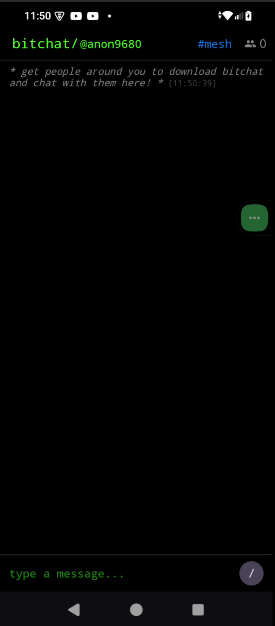
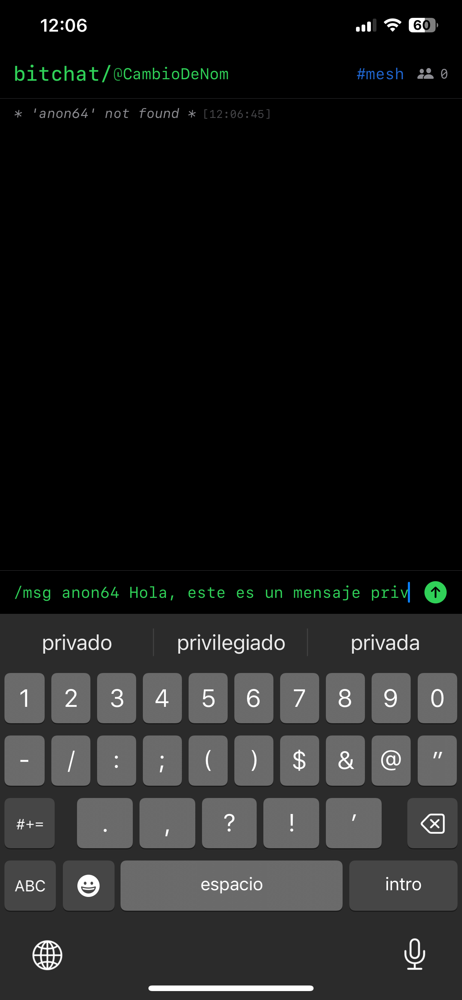

|
 |
ANTES: Textos extensos y con redundancias, dificultando la lectura y generando confusión.
DESPUÉS: Textos breves, directos y sin redundancias, facilitando la comprensión y agilizando la interacción. |
ANTES: Estilos visuales y terminología variables, generando incertidumbre.
DESPUÉS: Unificación total de estilos, iconografía y términos, generando confianza y orientación. |
ANTES: Instrucciones ambiguas y poco claras, provocando errores.
DESPUÉS: Mensajes claros y precisos, asegurando que el usuario entienda a la primera. |
ANTES: Mensajes de error fríos y culpabilizadores.
DESPUÉS: Mensajes empáticos y comprensivos, transmitiendo apoyo y acompañamiento. |
ANTES: Bajo contraste, sin textos alternativos y navegación limitada.
DESPUÉS: Contraste mejorado, textos alternativos y navegación accesible para todos. |
ANTES: Lenguaje con posibles estereotipos y opciones limitadas.
DESPUÉS: Lenguaje neutro y opciones diversas, respetando la diversidad de usuarios. |
ANTES: Microcopias ausentes o confusas, generando dudas.
DESPUÉS: Microcopias precisas y útiles, anticipando dudas y guiando al usuario. |
ANTES: Botones poco visibles y textos genéricos.
DESPUÉS: Botones y enlaces visibles, con textos claros y motivadores. |
ANTES: Tono variable y poco alineado con la marca.
DESPUÉS: Tono coherente y alineado con la marca, facilitando la comprensión. |
ANTES: Feedback tardío o confuso tras las acciones.
DESPUÉS: Feedback inmediato y claro, informando al usuario en tiempo real. |
 |
 |
ANTES: Textos largos y poco claros, generando dudas y ralentizando el registro.
DESPUÉS: Textos directos y simplificados, permitiendo que el usuario complete el registro fácilmente. |
ANTES: Iconos y colores inconsistentes, dificultando la navegación.
DESPUÉS: Consistencia total en iconos, colores y estructura visual, facilitando el aprendizaje. |
ANTES: Indicaciones ambiguas y confusas para los campos.
DESPUÉS: Indicaciones claras y precisas para cada campo y acción, eliminando confusiones. |
ANTES: Mensajes de error impersonales y poco útiles.
DESPUÉS: Mensajes de ayuda y error con tono cercano y de apoyo, acompañando al usuario. |
ANTES: Contraste bajo y navegación poco accesible.
DESPUÉS: Contraste mejorado y navegación accesible para todos los usuarios. |
ANTES: Opciones limitadas y lenguaje poco inclusivo.
DESPUÉS: Opciones diversas y lenguaje inclusivo, respetando la diversidad. |
ANTES: Microcopias ausentes o poco útiles.
DESPUÉS: Microcopias que anticipan dudas y guían al usuario en cada paso. |
ANTES: Botones y enlaces poco visibles y textos genéricos.
DESPUÉS: CTAs claros, motivadores y ubicados estratégicamente. |
ANTES: Textos incoherentes y desalineados con la marca.
DESPUÉS: Textos coherentes y alineados con la experiencia de marca. |
ANTES: Feedback tardío o inexistente tras las acciones.
DESPUÉS: Feedback visual y textual inmediato tras cada acción. |
 |
 |
ANTES: Mensajes redundantes y poco directos, generando confusión.
DESPUÉS: Mensajes directos y claros, permitiendo avanzar rápidamente. |
ANTES: Formularios con estructura variable y poco intuitiva.
DESPUÉS: Estructura estandarizada y consistente en campos, botones y mensajes. |
ANTES: Mensajes poco claros en cada paso.
DESPUÉS: Mensajes claros y precisos para cada paso del proceso. |
ANTES: Errores sin ayuda contextual y tono frío.
DESPUÉS: Ayuda contextual y mensajes empáticos en los errores. |
ANTES: Elementos poco accesibles y navegación limitada.
DESPUÉS: Elementos accesibles y navegación optimizada para todos. |
ANTES: Lenguaje poco inclusivo y opciones limitadas.
DESPUÉS: Lenguaje inclusivo y opciones para todos los usuarios. |
ANTES: Microcopias ausentes o poco explicativas.
DESPUÉS: Microcopias que explican cada campo y acción, anticipando dudas. |
ANTES: CTAs poco visibles y textos genéricos.
DESPUÉS: CTAs visibles y motivadores, facilitando la acción. |
ANTES: Textos desalineados con la marca y poco coherentes.
DESPUÉS: Textos alineados con la marca y coherentes en todo el flujo. |
ANTES: Sin feedback tras las interacciones.
DESPUÉS: Feedback inmediato tras cada interacción. |
 |
 |
ANTES: Textos largos y poco relevantes, dificultando la acción.
DESPUÉS: Textos breves, directos y relevantes, facilitando la comprensión y la acción. |
ANTES: Botones y colores inconsistentes, generando confusión.
DESPUÉS: Botones y colores estandarizados, logrando consistencia visual. |
ANTES: Indicaciones poco claras para las acciones.
DESPUÉS: Indicaciones claras y precisas para cada acción. |
ANTES: Mensajes de error sin empatía.
DESPUÉS: Validaciones y mensajes de error redactados con empatía. |
ANTES: Contraste bajo y accesibilidad limitada.
DESPUÉS: Contraste mejorado y accesibilidad para todos los usuarios. |
ANTES: Lenguaje poco inclusivo y opciones limitadas.
DESPUÉS: Lenguaje inclusivo y opciones diversas para todos los perfiles. |
ANTES: Microcopias ausentes o poco útiles.
DESPUÉS: Microcopias que guían el flujo de registro y resuelven errores. |
ANTES: CTAs poco claros y motivadores.
DESPUÉS: CTAs claros y motivadores, ubicados estratégicamente. |
ANTES: Textos incoherentes y desalineados con la marca.
DESPUÉS: Textos coherentes y alineados con la marca. |
ANTES: Sin feedback tras las acciones.
DESPUÉS: Feedback visual y textual tras cada acción. |
 |
 |
ANTES: Textos largos y redundantes, dificultando la comprensión.
DESPUÉS: Textos simplificados y sin redundancias, facilitando la acción. |
ANTES: Iconos y estructura visual variable.
DESPUÉS: Consistencia total en iconos y estructura visual. |
ANTES: Mensajes poco claros y confusos.
DESPUÉS: Mensajes claros y directos para cada acción. |
ANTES: Mensajes de error sin empatía.
DESPUÉS: Mensajes de error y ayuda redactados con empatía. |
ANTES: Elementos poco accesibles y navegación limitada.
DESPUÉS: Elementos accesibles y navegación optimizada. |
ANTES: Lenguaje poco inclusivo y opciones limitadas.
DESPUÉS: Lenguaje inclusivo y opciones para todos los usuarios. |
ANTES: Microcopias ausentes o poco útiles.
DESPUÉS: Microcopias útiles y precisas, anticipando dudas. |
ANTES: CTAs poco motivadores y ubicación confusa.
DESPUÉS: CTAs motivadores y ubicados estratégicamente. |
ANTES: Textos incoherentes y desalineados con la marca.
DESPUÉS: Textos alineados con la marca y coherentes. |
ANTES: Sin feedback tras las interacciones.
DESPUÉS: Feedback inmediato tras cada interacción. |
 |
 |
ANTES: Textos largos y poco directos, generando confusión.
DESPUÉS: Textos directos y sin redundancias, facilitando la comprensión y la acción. |
ANTES: Colores y botones inconsistentes.
DESPUÉS: Colores y botones estandarizados, logrando consistencia visual. |
ANTES: Indicaciones poco claras y comprensibles.
DESPUÉS: Indicaciones claras y comprensibles para cada acción. |
ANTES: Mensajes de error sin empatía.
DESPUÉS: Validaciones y mensajes de error redactados con empatía. |
ANTES: Contraste bajo y accesibilidad limitada.
DESPUÉS: Contraste mejorado y accesibilidad para todos los usuarios. |
ANTES: Lenguaje poco inclusivo y opciones limitadas.
DESPUÉS: Lenguaje inclusivo y opciones diversas para todos los perfiles. |
ANTES: Microcopias ausentes o poco útiles.
DESPUÉS: Microcopias que guían cada paso y resuelven errores. |
ANTES: CTAs poco claros y motivadores.
DESPUÉS: CTAs claros y motivadores, ubicados estratégicamente. |
ANTES: Textos incoherentes y desalineados con la marca.
DESPUÉS: Textos coherentes y alineados con la marca. |
ANTES: Sin feedback tras las acciones.
DESPUÉS: Feedback visual tras cada acción. |
|  |
 |
ANTES: Textos largos y poco relevantes en la pantalla principal.
DESPUÉS: Textos breves, directos y relevantes, facilitando la comprensión y la acción. |
ANTES: Iconos y colores de navegación inconsistentes.
DESPUÉS: Consistencia total en iconos y colores de navegación. |
ANTES: Indicaciones poco claras para los módulos.
DESPUÉS: Indicaciones claras y precisas para cada módulo. |
ANTES: Ayudas y mensajes de error sin empatía.
DESPUÉS: Ayudas y mensajes de error redactados con empatía. |
ANTES: Contraste bajo y accesibilidad limitada en la home.
DESPUÉS: Contraste mejorado y accesibilidad para todos los usuarios. |
ANTES: Lenguaje poco inclusivo en mensajes y opciones.
DESPUÉS: Lenguaje inclusivo en mensajes y opciones. |
ANTES: Microcopias ausentes o poco útiles en la navegación.
DESPUÉS: Microcopias útiles y precisas en la navegación. |
ANTES: CTAs poco visibles y motivadores en la home.
DESPUÉS: CTAs visibles y motivadores en la home. |
ANTES: Textos incoherentes y desalineados con la marca.
DESPUÉS: Textos alineados con la marca y coherentes. |
ANTES: Sin feedback en acciones principales.
DESPUÉS: Feedback inmediato en acciones principales. |
 |
 |
ANTES: Textos largos y poco directos en la navegación.
DESPUÉS: Textos directos y sin redundancias, facilitando la acción. |
ANTES: Colores y estructura visual inconsistentes.
DESPUÉS: Consistencia total en colores y estructura visual. |
ANTES: Indicaciones poco claras para las acciones.
DESPUÉS: Indicaciones claras y precisas para cada acción. |
ANTES: Ayudas y validaciones sin empatía.
DESPUÉS: Ayudas y validaciones redactadas con empatía. |
ANTES: Accesibilidad limitada en la navegación.
DESPUÉS: Accesibilidad mejorada en la navegación. |
ANTES: Lenguaje poco inclusivo y opciones limitadas.
DESPUÉS: Lenguaje inclusivo y opciones diversas. |
ANTES: Microcopias ausentes o poco útiles en los módulos.
DESPUÉS: Microcopias útiles y precisas en cada módulo. |
ANTES: CTAs poco claros y motivadores en la navegación.
DESPUÉS: CTAs claros y motivadores en la navegación. |
ANTES: Textos incoherentes y desalineados con la marca.
DESPUÉS: Textos alineados con la marca y coherentes. |
ANTES: Sin feedback tras las acciones.
DESPUÉS: Feedback visual tras cada acción. |
 |
 |
ANTES: Textos largos y poco relevantes en cada sección.
DESPUÉS: Textos breves, directos y relevantes, facilitando la comprensión y la acción. |
ANTES: Iconos y colores de navegación inconsistentes.
DESPUÉS: Consistencia total en iconos y colores de navegación. |
ANTES: Indicaciones poco claras para los módulos.
DESPUÉS: Indicaciones claras y precisas para cada módulo. |
ANTES: Ayudas y mensajes de error sin empatía.
DESPUÉS: Ayudas y mensajes de error redactados con empatía. |
ANTES: Contraste bajo y accesibilidad limitada en la home.
DESPUÉS: Contraste mejorado y accesibilidad para todos los usuarios. |
ANTES: Lenguaje poco inclusivo en mensajes y opciones.
DESPUÉS: Lenguaje inclusivo en mensajes y opciones. |
ANTES: Microcopias ausentes o poco útiles en la navegación.
DESPUÉS: Microcopias útiles y precisas en la navegación. |
ANTES: CTAs poco visibles y motivadores en la home.
DESPUÉS: CTAs visibles y motivadores en la home. |
ANTES: Textos incoherentes y desalineados con la marca.
DESPUÉS: Textos alineados con la marca y coherentes. |
ANTES: Sin feedback en acciones principales.
DESPUÉS: Feedback inmediato en acciones principales. |
 |
 |
ANTES: Textos largos y poco directos en la navegación.
DESPUÉS: Textos directos, relevantes y sin redundancias, facilitando la acción. |
ANTES: Colores y estructura visual inconsistentes.
DESPUÉS: Consistencia total en colores y estructura visual. |
ANTES: Indicaciones poco claras para las acciones.
DESPUÉS: Indicaciones claras y precisas para cada acción. |
ANTES: Ayudas y validaciones sin empatía.
DESPUÉS: Ayudas y validaciones redactadas con empatía. |
ANTES: Accesibilidad limitada en la navegación.
DESPUÉS: Accesibilidad mejorada en la navegación. |
ANTES: Lenguaje poco inclusivo y opciones limitadas.
DESPUÉS: Lenguaje inclusivo y opciones diversas. |
ANTES: Microcopias ausentes o poco útiles en los módulos.
DESPUÉS: Microcopias útiles y precisas en cada módulo. |
ANTES: CTAs poco claros y motivadores en la navegación.
DESPUÉS: CTAs claros, motivadores y ubicados estratégicamente. |
ANTES: Textos incoherentes y desalineados con la marca.
DESPUÉS: Textos alineados con la marca y coherentes. |
ANTES: Sin feedback tras las acciones.
DESPUÉS: Feedback visual tras cada acción y validación en tiempo real. |
 |
|
Descripción de concisión para pantalla 11 |
Descripción de consistencia para pantalla 11 |
Descripción de claridad para pantalla 11 |
Descripción de empatía para pantalla 11 |
Descripción de accesibilidad para pantalla 11 |
Descripción de inclusividad para pantalla 11 |
Descripción de microcopias para pantalla 11 |
Descripción de CTAs para pantalla 11 |
Descripción de UX writing para pantalla 11 |
Descripción de diseño centrado en el usuario para pantalla 11 |
 |
|
Descripción de concisión para pantalla 12 |
Descripción de consistencia para pantalla 12 |
Descripción de claridad para pantalla 12 |
Descripción de empatía para pantalla 12 |
Descripción de accesibilidad para pantalla 12 |
Descripción de inclusividad para pantalla 12 |
Descripción de microcopias para pantalla 12 |
Descripción de CTAs para pantalla 12 |
Descripción de UX writing para pantalla 12 |
Descripción de diseño centrado en el usuario para pantalla 12 |
 |
|
Descripción de concisión para pantalla 13 |
Descripción de consistencia para pantalla 13 |
Descripción de claridad para pantalla 13 |
Descripción de empatía para pantalla 13 |
Descripción de accesibilidad para pantalla 13 |
Descripción de inclusividad para pantalla 13 |
Descripción de microcopias para pantalla 13 |
Descripción de CTAs para pantalla 13 |
Descripción de UX writing para pantalla 13 |
Descripción de diseño centrado en el usuario para pantalla 13 |
 |
|
Descripción de concisión para pantalla 14 |
Descripción de consistencia para pantalla 14 |
Descripción de claridad para pantalla 14 |
Descripción de empatía para pantalla 14 |
Descripción de accesibilidad para pantalla 14 |
Descripción de inclusividad para pantalla 14 |
Descripción de microcopias para pantalla 14 |
Descripción de CTAs para pantalla 14 |
Descripción de UX writing para pantalla 14 |
Descripción de diseño centrado en el usuario para pantalla 14 |
 |
|
Descripción de concisión para pantalla 15 |
Descripción de consistencia para pantalla 15 |
Descripción de claridad para pantalla 15 |
Descripción de empatía para pantalla 15 |
Descripción de accesibilidad para pantalla 15 |
Descripción de inclusividad para pantalla 15 |
Descripción de microcopias para pantalla 15 |
Descripción de CTAs para pantalla 15 |
Descripción de UX writing para pantalla 15 |
Descripción de diseño centrado en el usuario para pantalla 15 |
 |
|
Descripción de concisión para pantalla 16 |
Descripción de consistencia para pantalla 16 |
Descripción de claridad para pantalla 16 |
Descripción de empatía para pantalla 16 |
Descripción de accesibilidad para pantalla 16 |
Descripción de inclusividad para pantalla 16 |
Descripción de microcopias para pantalla 16 |
Descripción de CTAs para pantalla 16 |
Descripción de UX writing para pantalla 16 |
Descripción de diseño centrado en el usuario para pantalla 16 |
 |
|
Descripción de concisión para pantalla 17 |
Descripción de consistencia para pantalla 17 |
Descripción de claridad para pantalla 17 |
Descripción de empatía para pantalla 17 |
Descripción de accesibilidad para pantalla 17 |
Descripción de inclusividad para pantalla 17 |
Descripción de microcopias para pantalla 17 |
Descripción de CTAs para pantalla 17 |
Descripción de UX writing para pantalla 17 |
Descripción de diseño centrado en el usuario para pantalla 17 |
|  |
|
Descripción de concisión para pantalla 18 |
Descripción de consistencia para pantalla 18 |
Descripción de claridad para pantalla 18 |
Descripción de empatía para pantalla 18 |
Descripción de accesibilidad para pantalla 18 |
Descripción de inclusividad para pantalla 18 |
Descripción de microcopias para pantalla 18 |
Descripción de CTAs para pantalla 18 |
Descripción de UX writing para pantalla 18 |
Descripción de diseño centrado en el usuario para pantalla 18 |
 |
|
Descripción de concisión para pantalla 19 |
Descripción de consistencia para pantalla 19 |
Descripción de claridad para pantalla 19 |
Descripción de empatía para pantalla 19 |
Descripción de accesibilidad para pantalla 19 |
Descripción de inclusividad para pantalla 19 |
Descripción de microcopias para pantalla 19 |
Descripción de CTAs para pantalla 19 |
Descripción de UX writing para pantalla 19 |
Descripción de diseño centrado en el usuario para pantalla 19 |
 |
|
Descripción de concisión para pantalla 20 |
Descripción de consistencia para pantalla 20 |
Descripción de claridad para pantalla 20 |
Descripción de empatía para pantalla 20 |
Descripción de accesibilidad para pantalla 20 |
Descripción de inclusividad para pantalla 20 |
Descripción de microcopias para pantalla 20 |
Descripción de CTAs para pantalla 20 |
Descripción de UX writing para pantalla 20 |
Descripción de diseño centrado en el usuario para pantalla 20 |